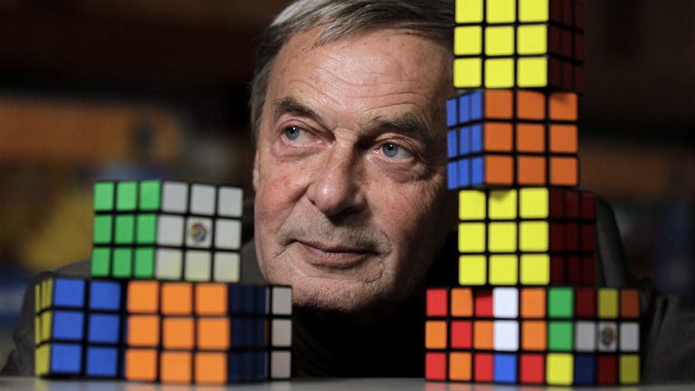
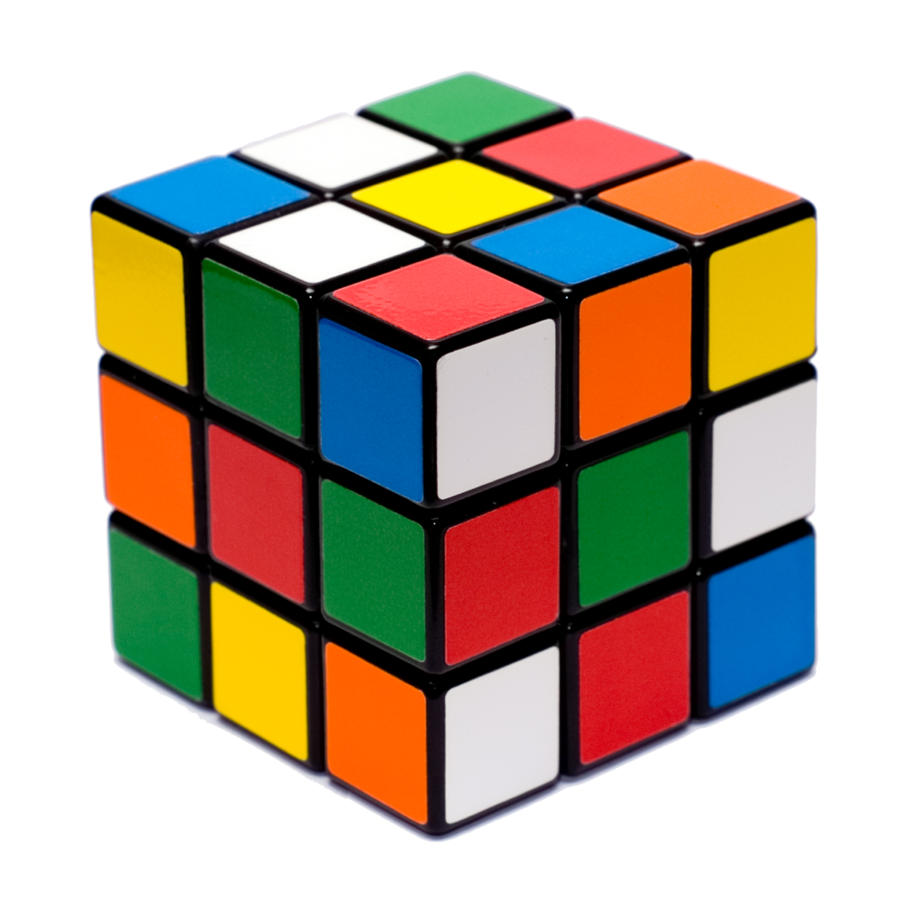
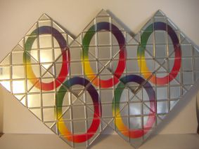

Rubik Ernő
1944. július 13. (74 éves)

Életpályája
- 1967-ben építészmérnökként végzett a BME Építészmérnöki Karán
- 1983-ban saját vállalkozást alapított, a Rubik Stúdiót, ahol bútorokat és játékokat tervezett
- 1987-től címzetes egyetemi tanár
Játékai
- Rubik-Kocka
- Rubik-Kígyó
- Rubik-Négyzet

